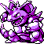
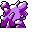

#034
Nidoking
PoisonGround
It uses its powerful tail in battle to smash, constrict, then break the prey's bones
Base stats Total 410
HP81
Attack92
Defense77
Speed85
Special75
Details
- Species
- Drill
- Height
- 4'07"
- Weight
- 137.0 lb
- Catch rate
- 45
- Base exp
- 195
- Growth
- Medium Slow
Level-up moves
LevelMoveType
StartTackleNormal
StartHorn AttackNormal
StartPoison StingPoison
StartThrashNormal
Lv 7LeerNormal
Lv 9Double KickFighting
Lv 12Peck
Lv 18Focus EnergyNormal
Lv 22DigGround
Lv 25AcidPoison
Lv 33Drill Peck
Lv 38SludgePoison
Lv 41Sludge BombPoison
Lv 44EarthquakeGround
Evolution
Evolves from Nidorino
Where to find
TM / HM
TM01 Mega PunchTM05 Mega KickTM06 ToxicTM07 Shadow BallTM08 Body SlamTM09 Take DownTM10 Double-EdgeTM11 BubblebeamTM12 Water GunTM13 Ice BeamTM14 BlizzardTM15 Hyper BeamTM17 SubmissionTM18 CounterTM19 Seismic TossTM20 Pay DayTM24 ThunderboltTM25 ThunderTM26 EarthquakeTM27 FissureTM28 DigTM31 MimicTM32 Double TeamTM33 ReflectTM34 BideTM37 FlamethrowerTM38 Fire BlastTM40 Sludge BombTM44 RestTM48 Rock SlideTM50 SubstituteHM01 CutHM03 SurfHM04 Strength